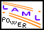
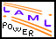

|  |
| Sample notes Kurt Nørmark © |
| Lecture 1 | Chapter one title | |||
| Lecture 2 | Chapter two title |
| Generated: Tuesday July 26, 2005, 10:27:55 on the system cs-unix |  |
| | |
| Sample notes Kurt Nørmark © |
| Lecture 1 | Chapter one title | |||
| Lecture 2 | Chapter two title |
| Generated: Tuesday July 26, 2005, 10:27:55 on the system cs-unix |  |